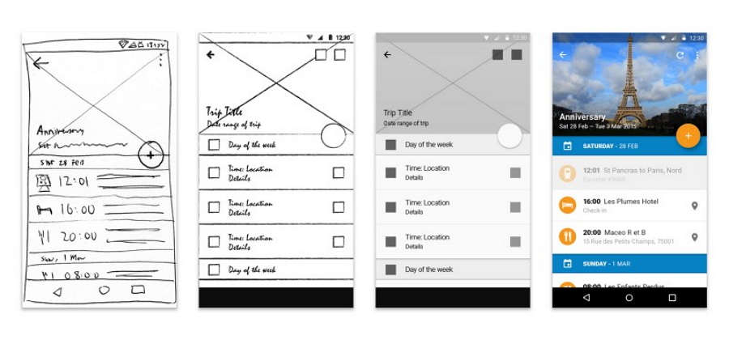

According to interaction-design.org “prototype is a simple experimental model of a proposed solution used to test or validate ideas, design assumptions and other aspects of its conceptualization quickly and cheaply, so that the designer/s involved can make appropriate refinements or possible changes in direction”.
From what I understood from that is prototyping is having a project come to life but not officially out yet to the public it need some tweaking thus it won’t be a problem to the user however there is bound to be some compliant and bug but it usually some minor problems or perhaps improvement from users feedback.
Low-fidelity aka lo-fi is the first thing to work on when creating prototype, it essentially a template on where things should be, it could first draw with just shapes and lines even a DIY makeshift to fully visualize the application there is no coding involved. The advantage of lo-fi is clarification developers can easily pinpoint out what they could improve or remove by a simple erase or removal of the template, another is faster that hi-fi since there are no coding lo-fi focus mostly on layout and design.
High-fidelity prototype aka hi-fi is when the lo-fi comes online this is where the design and coding takes part. An advantage is it is testable it has animation transition to look more appealing and other advantage is having actual feedback during the testing since user can get to interact with it.
An example would be seen below:
As you can see lo-fi is on the far left and it is a rough sketch on the design, then next to the right it a clean sketch, then next is the hi-fi making the sketch come to life and interactable then thus the last would be the final output with the colors included and perhaps improved on more from the last output.
Prototyping is important because it helps and guide the developer on how to make an application successful, without it the application can go terribly wrong and thus making it a stressful situation. Let’s say a developer started and finished with a hi-fi prototype there a high percentage that the app will not run smoothly as it should. There is going to be a low user percentage rate and making the app deemed unsuccessful. That’s why starting off with a lo-fi prototype give developer a future perspective on how to app should look and run like.